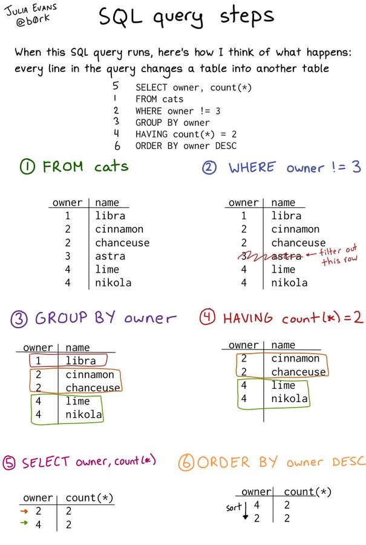

You will be dealing with potentially sensitive data, and so a basic understanding of data protection standards is a must for anyone working with data.
It’s amazing how many jobs want you to know SQL, and how comparatively EASY it is to learn once you know dplyr.
This tweet…
I actually bought and read books to learn what is contained in this single page. This is 80% of what you need to know about sql. https://t.co/OUA8YJe3X4
— Thomas J. Leeper (@thosjleeper) October 16, 2019
was in response to this tweet…
sql query steps pic.twitter.com/FnKbZiVIbd
— 🔎Julia Evans🔍 (@b0rk) October 16, 2019
which showed this image

Go to https://sqlbolt.com/ and work through the interactive tutorial up until lesson 12. Screenshot your answer for the last exercise and send to me via Discord.